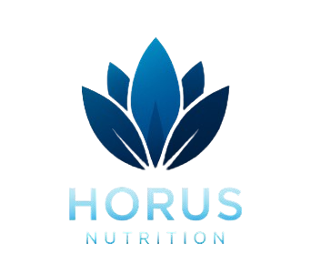

Sobre o Horus
O Horus Nutrition é um projeto desenvolvido para democratizar
o acesso ao conhecimento nutricional técnico. Mais do que um guia de dietas,
a plataforma funciona como um ecossistema de alfabetização alimentar,
capacitando os usuários a entenderem os mecanismos por trás de uma rotina saudável
e a tomarem decisões conscientes baseadas em conceitos científicos.
A desinformação e a complexidade de termos técnicos são grandes barreiras para quem busca melhorar a saúde. O desafio central do Horus Nutrition foi sintetizar temas densos da nutrição em uma experiência educativa, organizada e acessível, permitindo que qualquer pessoa, independentemente do conhecimento prévio consiga estruturar sua própria rotina alimentar.
A desinformação e a complexidade de termos técnicos são grandes barreiras para quem busca melhorar a saúde. O desafio central do Horus Nutrition foi sintetizar temas densos da nutrição em uma experiência educativa, organizada e acessível, permitindo que qualquer pessoa, independentemente do conhecimento prévio consiga estruturar sua própria rotina alimentar.